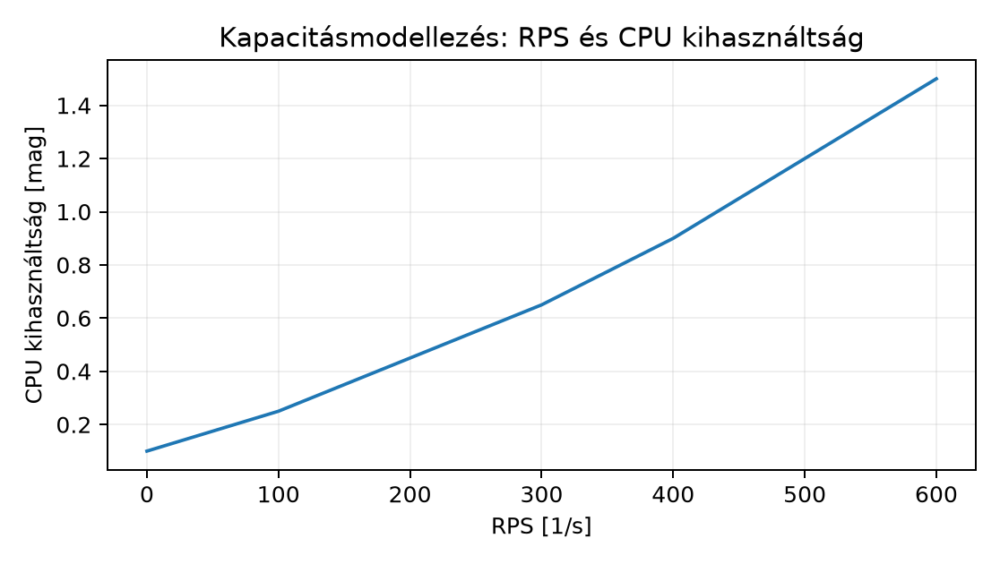

Egy szenior C++ fejlesztő csapat mostanra üzemeltet egy Linux VM-ekre és Kubernetesre épülő szolgáltatást. A telemetria, a rollout és a diagnosztika már működik, de a kapacitástervezés gyakran ad hoc marad: „van még CPU”, „az éjszakai batch elfér”, „a cloud számla nőtt”. A kapacitástervezés és a FinOps célja, hogy a szolgáltatás elvárt teljesítményét – SLO-kat – a legkisebb üzemeltetési kockázattal és ésszerű költséggel érjük el. A fejezetben egy munkamennyiség-vezérelt erőforrásmodellt építünk, amely a request, a concurrency, a CPU, a memória, a storage és a hálózat oldaláról is megbecsüli a szükséges kapacitást, és ezt pénzügyi modellé alakítja. A szenior C++ tudás itt a natív szolgáltatás erőforrásprofiljának értelmezésében hasznosul, de a kernel, a hálózat és a cloud viselkedése ettől még nem lesz ismert.
Kapacitásmodell (capacity model) alatt a szolgáltatás erőforrásigényének és a hozzá rendelt infrastruktúrának explicit, mért adatokon alapuló összefüggését értjük. A modell bemenete a munkamennyiség (workload), a kimenete a szükséges erőforrás: CPU magok, memória GiB, storage GiB / IOPS, hálózati sávszélesség és a költség. A headroom az a felesleges kapacitás, amelyet a váratlan forgalom, a hibás node, a rollout vagy a mérési hiba elnyelésére tartunk fenn. A FinOps a cloud pénzügyi működtetés diszciplínája: a unit cost (pl. USD per millió kérés), a használat és a költség folyamatos összevetése, valamint a tradeoffok – például reservation vagy on-demand, storage tier vagy egress – tudatos kezelése.
A kapacitástervezést négy rétegben vizsgáljuk:
A reservation előre vásárolt kapacitás (VM, instance, storage), amely kedvezőbb árat ad, de kihasználatlanul is fizetünk érte. A limit a konténer vagy VM felső erőforráskorlátja, a request pedig a scheduler által garantált minimális foglalás. A overcommit az a helyzet, amikor a sum(requests) kisebb az összes node kapacitásánál, de a tényleges használat ezt meghaladhatja; ez a CPU-nál többnyire tolerálható throttling árán, memóriánál OOM-hoz vezet.
A munkamennyiség jellemzőit mérjük, nem feltételezzük. Egy HTTP szolgáltatásnál a fő bemenetek:
A szükséges CPU magok számát az alábbi levezetéssel becsüljük. A CPU kihasználtság (0–1) a feldolgozandó munka és a rendelkezésre álló idő hányadosa. A teljes CPU idő másodpercenként: . A szükséges magok száma , ahol a megengedett átlagos kihasználtság. Például ha , s, akkor a CPU igény mag. Ha , akkor mag. A headroom miatt hozzáadunk még magot vagy 20%-ot, így 5 magot kérünk. A derivation feltételezi, hogy a kérés CPU ideje független a concurenciától, és a CPU idő nem változik a szoftververzióval.
A memóriánál a steady-state process RSS-t mérjük, nem a csúcsterhelés
alatti pillanatnyi értéket. A konténer memory request
értéke legalább a
,
ahol a buffer 10–20%, mert a heap növekedhet. A
memory limit ennél magasabb lehet, de a node-on a
sum(requests) nem haladhatja meg a node foglalható memóriáját, mert
akkor a scheduler nem tud új podot indítani. A memória overcommit
veszélyes: a kernel OOM killer nem ismeri a cloud költséget.
A storage esetében megkülönböztetjük a provisioned és a used kapacitást. A provisioned az a kapacitás, amelyet a cloud vagy a Ceph klaszter lefoglal; a used a ténylegesen írt adat. A vékony provisioning (thin provisioning) esetén a kettő eltér, ami kockázatot jelent: a filesystem tele lehet, miközben a cloud volume mutat még szabad helyet.
A hálózati sávszélesség becslése: bit/s, ahol a válasz mérete byte-ban. Például , KiB, akkor Gbit/s. Az egress forgalom a cloudban pénzbe kerül, ezért a válasz méretét cache-eléssel vagy tömörítéssel csökkenthetjük.
Az autoscaling – akár HPA Kubernetesben, akár cloud instance scaling – nem azonnali. A scaling delay () a metrika átlépésétől az új kapacitás rendelkezésre állásáig eltelt idő. Ez Kubernetes HPA esetén jellemzően 1–2 perc (metrika polling + pod indítás), cluster autoscaler esetén 2–5 perc (node provision), cloud VM esetén 1–10 perc az image méretétől és a bootstrap scripttől függően. A burst a hirtelen forgalomnövekedés, amelyet a jelenlegi kapacitás nem tud kiszolgálni. Az autoscale delay alatt a bejövő kérések várakozó sorba kerülnek.
A várakozó sor viselkedését a Little-törvény segítségével modellezhetjük: , ahol a sorban álló feladatok száma, az érkezési ráta, a várakozási idő. Ha a kapacitás request/s, és a bejövő forgalom , akkor a sor hossza lesz. A cél az, hogy a sor ne növekedjen korlátlanul: vagy a kapacitás nő, vagy load shedding lép be. A saturation budget az az időablak, ameddig a rendszer túlterhelt lehet anélkül, hogy az SLO sérülne. A saturation budget deriválható az error budgetből: ha a havi error budget 0.1% (43 perc), és a szolgáltatás átlagos RPS 1000, akkor egy 10 másodperces telítettség 10 000 kérés hibáját okozhatja, ami már meghaladja a 43 perc alatti hibák egy részét.
Az autoscale konfigurációban fontos a stabilizációs ablak (scale-down stabilization window), amely megakadályozza a flappinget. Ha a forgalom ingadozó, a scale-down túl gyorsan csökkenti a replikákat, majd ismét fel kell skálázni. A stabilizációs ablakot a munkamennyiség periodicitásához igazítjuk.
A költségmodellben a unit cost az egységnyi szolgáltatás – például 1 millió kérés – költsége. A unit cost kiszámítása:
ahol a compute, a tárolás, a hálózati forgalom, az egyéb (pl. managed service) költség, az adott időszakban kiszolgált kérések száma. A cloud árak gyorsan változnak, ezért a számpéldában hipotetikus árakat használunk, és ezt mindig jelezzük.
Hipotetikus példa: egy régióban egy m6i.large típusú VM
óradíja legyen 0.03 USD (ez nem aktuális AWS ár). Egy
managed block storage GB-havi díja 0.08 USD, az egress
forgalom 0.09 USD/GB az ingyenes keret felett. A
reservation 1 éves, all upfront esetén 40% kedvezményt adhat – de ezt az
adott cloud szolgáltatónál ellenőrizni kell. A FinOps feladata, hogy a
reservation és az on-demand kapacitás arányát a tényleges használathoz
igazítsa: ha a baseline 70%-ban kihasznált, a fennmaradó 30% burst
on-demand maradhat.
A retention és a storage tier
tradeoff: a gyakran olvasott adatot drágább, gyorsabb tierre tesszük, a
ritkán olvasott logot olcsóbb, lassabb tierre vagy object storage-ba. A
retention policy meghatározza, mennyi ideig tartjuk az adatot. A
hipotetikus költség: hot SSD 0.10 USD/GB/hó, cold object
0.02 USD/GB/hó, de az átállás során az egress és az API
hívások díja növekedhet. Az adatéletciklus szabályt aszerint állítjuk
be, hogy az SLO megköveteli-e a gyors visszaállítást.
Vegyünk egy képzeletbeli C++ microservice-t, amely JSON API-t szolgál ki, és a d199-ben bemutatott Kubernetes HPA mintához hasonlóan skálázódik. A szolgáltatás mérései:
A CPU igény a csúcsterhelésre 600 RPS esetén:
s = 0.9 mag. Ha a target kihasználtság 0.6, akkor
mag, plusz headroom → 2 mag. A HPA target CPU utilization 60%,
minReplicas 3, maxReplicas 10. A pod request.cpu = 500m,
limit.cpu = 2, request.memory = 512Mi,
limit.memory = 1Gi. A 3 pod request összesen 1.5 CPU és 1.5
GiB memória, ami egy 4 vCPU / 8 GiB node-on elfér, de nem hagy nagy
headroomot. Ezért 2 node-ot tartunk, hogy egy node kiesésekor a másik
elbírja a terhelést: a csúcs 600 RPS, ami 1.5–2 magot igényel, tehát egy
4 magos node is elég, de a memória és a storage miatt két node
biztonságosabb.
A storage: az object store havi 0.1 GiB per 1e6 kérés, tehát 300 RPS átlagnál havi kérés millió kérés. A havi adat: GiB. Ha a retention 90 nap, akkor a teljes állomány GiB. Hipotetikus cold object áron USD/GB/hó: USD/hó. Az egress: a válaszok összesen 50 KiB * 777.6M kérés ≈ 37 TiB, ami 37 000 GiB; ebből az ingyenes 100 GiB feletti rész 36 900 GiB * 0.09 USD = 3 321 USD/hó, ami irreálisan magas lenne. Ezért a szolgáltatás elé CDN-t vagy cache-t teszünk, ami a válasz 90%-át elnyeli, így az origin egress 3.7 TiB-ra csökken. A hipotetikus példa jól mutatja, hogy az egress költség gyakran nagyobb, mint a compute.
A számításokhoz használjunk PromQL-t a tényleges használat mérésére. A container CPU használat:
rate(container_cpu_usage_seconds_total{container="api", namespace="prod"}[5m])A memória RSS a container_memory_working_set_bytes
metrika. A hálózati forgalom:
rate(container_network_transmit_bytes_total{container="api", namespace="prod"}[5m])A kapacitásmodellezéshez futtathatunk load tesztet, de a production mérés hitelesebb. A kapacitásmodell táblázatát így rögzítjük:
| Erőforrás | Csúcsigény | Request/limit | Target kihasználtság | Headroom |
|---|---|---|---|---|
| CPU | 0.9 mag | request 500m podonként, limit 2 | 60% | +25% (2 mag összesen) |
| Memória | 400 MiB/pod | request 512 MiB, limit 1 Gi | 80% | +20% buffer |
| Storage (object) | 77.8 GiB/hó | – | – | 90 nap retention |
| Hálózat egress | 37 TiB/hó origin | – | – | CDN cache 90% |
A pod autoscale késleltetésének becslése: ha a forgalom 300 RPS-ről 600 RPS-re ugrik, a HPA 60 másodperc alatt érzékeli (metrics polling 30 s, scale-up 30 s), és egy új pod 10 másodperc alatt indul. A teljes delay s. Ez alatt a régi 3 pod 300 RPS-t tud kiszolgálni, a bejövő 600 RPS-ből 300 RPS a sorba kerül. A sor hossza kérés. Ez meghaladja a kapcsolat várakozási timeoutját, ezért a kliensek hibát kapnak. A megoldás: a HPA scale-up threshold 60% helyett 50%, és a pod startup probe gyors; vagy előre provisioned burst capacity (pl. minReplicas 5). A saturation budget erre 21 000 kérés * 50 KiB = 1 GiB egress, ami a CDN-nél elenyésző.
A költségmodell hipotetikus havi költsége:
| Tétel | Mennyiség | Hipotetikus egységár | Havi költség |
|---|---|---|---|
| Compute (2 × m6i.large) | 730 óra | 0.03 USD/óra | 43.8 USD |
| Object storage | 233.4 GiB | 0.02 USD/GiB/hó | 4.67 USD |
| Egress (origin) | 3.7 TiB | 0.09 USD/GiB | 341 USD |
| CDN | 33 TB | 0.01 USD/GiB | 338 USD |
| Összesen | 727.47 USD |
A unit cost havi 777.6 millió kérésre: USD per kérés, azaz 0.935 USD per millió kérés. Ez hipotetikus, nem valós ár.
A példához egy YAML konfigurációt is adunk a HPA-hoz és a Pod resource-jaihoz:
# Illusztratív HPA és resource példa (Kubernetes autoscaling/v2)
apiVersion: apps/v1
kind: Deployment
metadata:
name: lab-api
spec:
replicas: 3
template:
spec:
containers:
- name: api
image: registry.example/lab-api:1.2.3
resources:
requests:
cpu: 500m
memory: 512Mi
limits:
cpu: "2"
memory: 1Gi
---
apiVersion: autoscaling/v2
kind: HorizontalPodAutoscaler
metadata:
name: lab-api
spec:
scaleTargetRef:
apiVersion: apps/v1
kind: Deployment
name: lab-api
minReplicas: 3
maxReplicas: 10
metrics:
- type: Resource
resource:
name: cpu
target:
type: Utilization
averageUtilization: 60
behavior:
scaleDown:
stabilizationWindowSeconds: 300A kapacitáshoz tartozó terhelés és kihasználtság összefüggését ábrázoljuk egy load teszt alapján. Az adatok hypotetikus, számított értékek, nem valós mérés.

A táblázat ugyanehhez:
| RPS | CPU kihasználtság [mag] |
|---|---|
| 0 | 0.1 |
| 100 | 0.25 |
| 200 | 0.45 |
| 300 | 0.65 |
| 400 | 0.9 |
| 500 | 1.2 |
| 600 | 1.5 |
A leggyakoribb hiba, hogy a kapacitást kizárólag a CPU-átlagból
becsülik, figyelmen kívül hagyva a memória, a storage és az egress
hatását. A tünet: a HPA felveszi a podokat, de a node-okon OOM vagy disk
pressure lép fel. Az ellenőrzés:
kubectl describe node <node> és a
kubectl top nodes mellett a storage used és a hálózati
forgalom grafikonjait is megnézzük. A hipotézis: a memória request
alulbecsült, mert a C++ alkalmazás heap növekedése nem lett figyelembe
véve.
A második hiba az overcommit túlzott használata: a sum(requests)
kisebb, mint a node kapacitás, de a sum(limits) sokkal nagyobb. A
memória limit feletti pod OOM killt kap, ami request hibákhoz vezet, és
a HPA nem tudja megmenteni. Az ellenőrzés:
kubectl get pods -o wide,
kubectl describe pod <pod> az OOMKilled státusz,
valamint a node /var/log/syslog OOM bejegyzése.
A harmadik hiba a FinOps oldalon a reservation nélküli on-demand költségre való hagyatkozás, miközben a baseline terhelés stabil. A tünet: a havi számla magasabb, mint a hasonló profile-oké; a hipotézis: nincs reservation, vagy a reservation lejárt. Az ellenőrzés a cloud billing API-val történhet. A megoldás egy fokozatos reservation vásárlás, de csak azután, hogy a tényleges használat mérésén alapul.
Egy szolgáltatás mérései: átlag RPS 500, csúcs 800, kérés CPU idő 2 ms, steady-state RSS 300 MiB, átlagos válasz 20 KiB, tartós adat 0.05 GiB per 1e6 kérés. Számold ki a csúcshoz szükséges CPU magokat 60% target kihasználtságnál és 20% headroommal. Add meg a memória request/limit javaslatot podonként, ha 4 podot futtatunk. Írd fel a havi storage és egress hipotetikus költségét a fenti hipotetikus árakkal (0.08 USD/GB/hó storage, 0.09 USD/GB egress), feltéve, hogy nincs CDN.
A fenti szolgáltatás HPA-ja 60% CPU utilization-t céloz, 2 perc a scale-up delay. A forgalom 500 RPS-ről 1000 RPS-re ugrik. Számold ki, hány kérés kerül a sorba a delay alatt, ha a jelenlegi kapacitás 500 RPS. Ezután módosítsd a HPA konfigurációt úgy, hogy a minReplicas 6 legyen, és a target 50%. Add meg a YAML-t.
Írj egy PromQL lekérdezést, amely a deployment CPU használatának 5 perces átlagát adja. Ezután egy shell parancsot, amely egy load tesztet futtat a szolgáltatás ellen a kapacitásmodell validálására. Végül számold ki, mekkora a havi error budget 0.1% SLO esetén, és hasonlítsd össze a 2. feladatban kapott sorban álló kérések számával.
A csúcs CPU igény:
mag. Target kihasználtság 0.6, így
mag. Headroom 20%:
mag. Ha 4 podunk van, akkor podonként request CPU
mag, azaz 800m. A memória: steady-state 300 MiB, buffer 20%
→ 360 MiB, tehát request 360Mi, limit 512Mi
vagy 1Gi a burst lehetőséghez.
Havi kérések:
milliárd kérés. Storage:
GiB, 90 nap retentionnel
GiB. Költség:
USD. Egress:
KiB * 1.296e9 kérés =
TiB, ami
USD. A válasz: a CPU
mag, podonként 800m request; a storage 15.55 USD, az egress
2 388 USD hipotetikus áron. A postcondition: a deployment resource
requestjei és a HPA célértéke a mért modellből következik, nem ad
hoc.
A sorban álló kérések: a bejövő 1000 RPS, a kapacitás 500 RPS, a delay 120 s. A sor hossza: kérés. Ez nagy, ezért a minReplicas növelése és a target csökkentése. Módosított YAML:
apiVersion: autoscaling/v2
kind: HorizontalPodAutoscaler
metadata:
name: lab-api
spec:
scaleTargetRef:
apiVersion: apps/v1
kind: Deployment
name: lab-api
minReplicas: 6
maxReplicas: 12
metrics:
- type: Resource
resource:
name: cpu
target:
type: Utilization
averageUtilization: 50
behavior:
scaleDown:
stabilizationWindowSeconds: 600A 6 pod 500 RPS-en már 50% alatt van, ezért a burst 1000 RPS-re is többnyire felkészült; a HPA gyorsabban reagál.
PromQL a CPU használatra:
sum(rate(container_cpu_usage_seconds_total{namespace="prod", pod=~"lab-api-.*"}[5m]))Load teszt shell parancs (például hey vagy
wrk, de itt egy általános locust vagy curl-alapú
script):
hey -z 10m -c 50 -q 1000 http://lab-api.prod.svc.cluster.local/healthA havi error budget 0.1% egy 30 napos hónapban: s. A 2. feladatban 60 000 kérés 120 s alatt; ha ezek mind error-ök, akkor 120 s a 2592 s-ból, azaz 4.6%-át fogyasztja el. A saturation budget tehát nagyobb, mint a tipikus autoscale késés, de a rendszeres burstök kimeríthetik.
A kapacitástervezés a mért workloadból indul ki, és a CPU, memória, storage, hálózat dimenzióit együttesen modellezi. A headroom a változékonyság és a hibák elnyelésére fenntartott többletkapacitás. Az autoscale delay alatt a forgalom és a kapacitás különbsége sorba áll; a sor hosszát a Little-törvényből becsülhetjük. A FinOps a unit cost és a retention/egress tradeoff segítségével hozza össze a műszaki kapacitást a költségekkel. A hipotetikus árak csak számítási példák; a tényleges cloud billing és support mindig az aktuális szolgáltatótól ellenőrzendő.
Ebben a kérésben nem volt webes keresőeszköz, ezért az alábbi
hivatkozások seed források, nem olvasott bizonyítékok. A Kubernetes HPA
és resource management pontos API-verziója a generáláskor támogatott
stabil minorhoz kötött; az itt használt autoscaling/v2 és
mezők illusztratívak. A cloud árak – még ha hipotetikusnak jelöltük is
őket – nem ellenőrzöttek; a tényleges AWS/Azure/GCP billing API és
pricing oldal használata szükséges. A PromQL metrikanevek a
kube-state-metrics és a cadvisor
konfigurációjától függenek.
A d269 gyakorlati ellenőrzése megkívánja: a production metrikák gyűjtését, a load teszt futtatását elkülönített környezetben, a cloud billing API lekérdezését és a Kubernetes-verzió support matrixának ellenőrzését. A jelen alfejezet csak a fogalmi modellt és a számítási vázat adja.